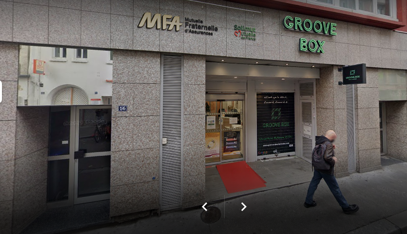
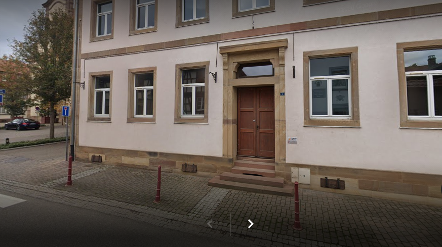

Dans la vie j'ai eu beaucoup de centre d'intérêt, notamment le sport étant plus jeune, mais aussi les jeux vidéo. J'ai pratiquer, l'athlestisme, le Badminton, le PingPong, j'ai pris 2 ans de cours de Piano. Plus tard je me suis intéréssé aux jeux vidéo plus en profondeur, à l'âge de 15 ans j'avais comme rêve de devenir Pro dans
l'esport mais je me suis vite rendu compte que pour le devenir j'aurai dû complétement arrêter l'école et ne plus avoir de vie sociale, je suis donc passé à autre choses. Ensuite j'ai finis par ne plus faire de sport/hobby jusqu'a aujourd'hui. Je ne fais plus de sport car cela ne m'intéresse plus, par contre cela maintenant 8 ans que je pratique un instrument de Musique qui est absolument incroyable : Le Piano !
Stage n°1
J'ai fait mon stage dans un cabinet de kinésithérapie
Le cabinet se situais au centre ville près de la place Homme De Fer
Le stage à durer 1 semaine, car j'étais en qu'en 3ème

Stage n°2
J'ai fait mon stage durant l'année de 2nd passerelle à ORT dans le batiment de la FDMJC (Fédération des Maisons des Jeunes et de la Culture d'Alsace)
Le Stage c'est déroulé sur 2 semaines (samedi inclus)
Quand je suis arrivé là bas ils m'ont fait visité et m'on très bien accueillis, après quelques jour, ils m'ont fait découvert la comptabilité,je n'ai pas trop accrocher et suis passé assez vite à autre chose.
Le fait que je n'aimais pas ça,j'avais trouvé cet "entreprise" car mon voisin en étais le PDG et m'en avais dis que du bien. J'ai aussi participé à quelque sortie scolaire là bas.

Je suis donc étudiant en RT121 à l'IUT de Colmar (UHA: Université de Haute Alsace) j'ai voulu aller dans cette formation car j'ai toujours aimé l'informatique et que le nom de cette formation m'a attiré, j'ai heureusement étais pris depuis ParcourSUP et maintenant je suis épanoui dans ce que je fais. Cette formation a un assez haut niveau, je suis en difficulté dans certaines matière car je n'avais pas beaucoup de connaissance de base et j'ai dû faire des recherches pour acquérir le niveau des autres élèves qui eux viennent de BAC générale et qui ont fait NSI. Dans cette formation il y a tout de même quelques matières que j'adore et dont j'avais envie d'en apprendre plus: developpement WEB et programation, je n'ai pas été déçu par ces 2 matières car j'en pratique même parfois durant mon temps libre d'où le sujet de la 3ème page : Les BOT Discord !